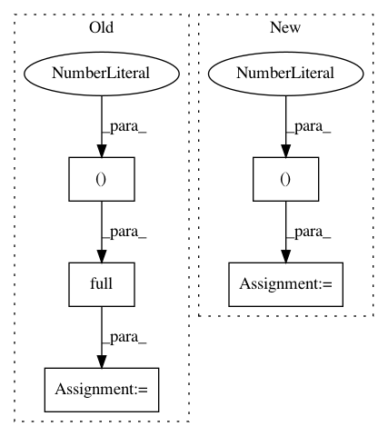

ba37ff3652f24e8416cf4eb13e9dd66976f843e8,tests/garage/tf/baselines/test_gaussian_cnn_baseline.py,TestGaussianCNNBaseline,test_is_pickleable,#TestGaussianCNNBaseline#,152
Before Change
"GaussianCNNRegressor"),
new=SimpleGaussianCNNRegressor):
gcb = GaussianCNNBaseline(env_spec=box_env.spec)
obs = {"observations": [np.full((1, 1), 1), np.full((1, 1), 1)]}
with tf.compat.v1.variable_scope("GaussianCNNBaseline", reuse=True):
return_var = tf.compat.v1.get_variable(
"SimpleGaussianCNNModel/return_var")
After Change
mock_lbfgs.assert_called_with(max_opt_itr=25)
def test_is_pickleable(self):
gcr = GaussianCNNBaseline(env_spec=test_env_spec,
filters=((3, (3, 3)), (6, (3, 3))),
strides=(1, 1),
padding="SAME",
hidden_sizes=(32, ),
adaptive_std=False,
use_trust_region=False)
with tf.compat.v1.variable_scope("GaussianCNNBaseline", reuse=True):
bias = tf.compat.v1.get_variable(
"dist_params/mean_network/hidden_0/bias")
In pattern: SUPERPATTERN
Frequency: 3
Non-data size: 5
Instances
Project Name: rlworkgroup/garage
Commit Name: ba37ff3652f24e8416cf4eb13e9dd66976f843e8
Time: 2020-06-30
Author: ahtsans@gmail.com
File Name: tests/garage/tf/baselines/test_gaussian_cnn_baseline.py
Class Name: TestGaussianCNNBaseline
Method Name: test_is_pickleable
Project Name: eriklindernoren/PyTorch-YOLOv3
Commit Name: 2ee8ac1546400645908b61ef015cdf5d71aa34cc
Time: 2019-04-22
Author: eriklindernoren@live.se
File Name: utils/datasets.py
Class Name:
Method Name: pad_to_square
Project Name: Alexander-H-Liu/End-to-end-ASR-Pytorch
Commit Name: e3c4a40fa2e5c76656ba0f210213e427683b3ad5
Time: 2019-10-31
Author: alexliu36@gmail.com
File Name: src/ctc.py
Class Name: CTCPrefixScore
Method Name: cheap_compute